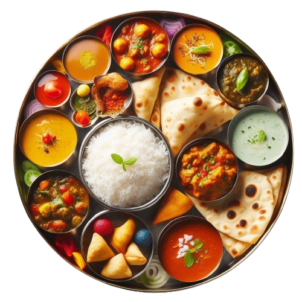
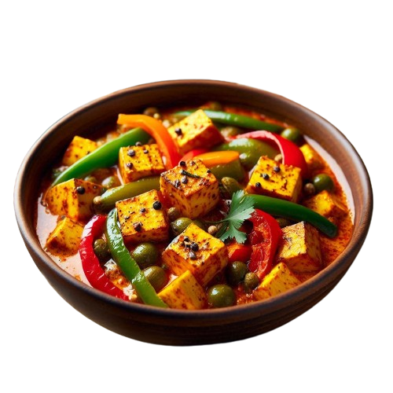
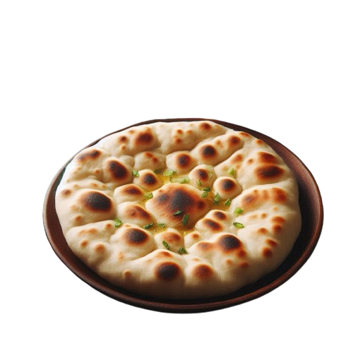
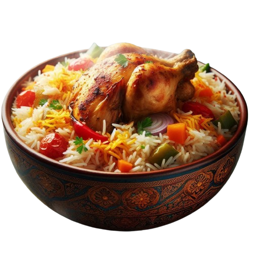
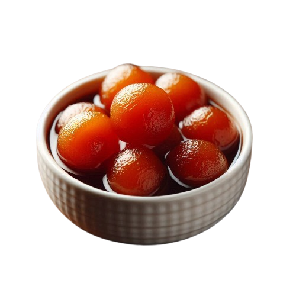
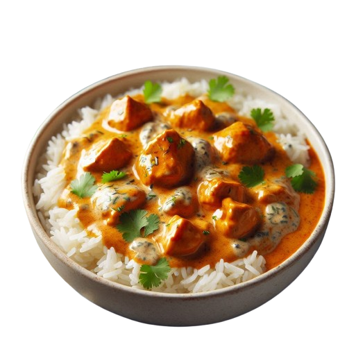

<!DOCTYPE html>
<html lang="en">
<head>
    <meta charset="UTF-8">
    <meta name="viewport" content="width=device-width, initial-scale=1.0">
    <!-- <link rel="stylesheet" href="./index.css"> -->
    <title>Restaurant Page</title>
</head>
<body>
    <header>
        <nav>
            <!-- <button type="button">  Home</button>
            <button type="button">  Menu</button>
            <button type="button"> Contact</button> -->
        </nav>
    </header>
    <div id="content">
        <!-- <div class="home">
            <div class="home-image-container">
                
            </div>
            <div class="home-text">
                <h2> Welcome to the House of Indian Food 🙏 </h2>
                <p>Indian food is renowned for its rich, aromatic spices and diverse regional flavors. From the creamy curries and tandoori meats of the North to the spicy, coconut-based dishes of the South, Indian cuisine offers a tantalizing array of tastes and textures. Staples like rice, lentils, and flatbreads form the base of many meals, complemented by an array of vegetables, meats, and chutneys, making Indian food a vibrant and flavorful culinary experience.</p>
            </div>
        </div> -->
        <!-- <div class="menu">
            <div class="card">
                
                <h2 class="card-title">Paneer Chilly</h2>
                <p class="card-description">
                    Paneer Chilly is a popular dish featuring crispy cubes of paneer stir-fried with bell peppers, and onions. It's a delightful fusion of textures and flavors, offering a perfect blend of heat and tanginess.
                </p>
            </div>

            <div class="card">
                
                <h2 class="card-title">Naan</h2>
                <p class="card-description">
                    Indian naan is a soft, leavened flatbread traditionally baked in a tandoor oven, resulting in a slightly charred, chewy texture. It's often enjoyed with various curries and kebabs, enhancing the meal with its pillowy goodness.
                </p>
            </div>

            <div class="card">
                
                <h2 class="card-title">Biryani</h2>
                <p class="card-description">
                    Biryani is a fragrant, spiced rice dish layered with marinated meat, vegetables, and aromatic spices like saffron. It's a one-pot delicacy that captures the essence of Indian cuisine with its rich flavors and aromatic appeal.
                </p>
            </div>

            <div class="card">
                
                <h2 class="card-title">Gulab Jamun</h2>
                <p class="card-description">
                    Gulab Jamun is a beloved Indian dessert consisting of soft, deep-fried dough balls soaked in a sweet, infused with cardamom. These melt-in-the-mouth treats are a festive favorite, celebrated for their rich, indulgent sweetness.
                </p>
            </div>

            <div class="card">
                
                <h2 class="card-title">Butter Chicken Rice Bowl</h2>
                <p class="card-description">
                    The butter chicken rice bowl features tender pieces of chicken cooked in a creamy, spiced tomato sauce served over a bed of fluffy basmati rice. This dish combines the rich flavors of butter chicken with the comforting simplicity of rice.
                </p>
            </div>

            <div class="card">
                
                <h2 class="card-title">Paneer Chilly</h2>
                <p class="card-description">
                    Paneer Chilly is a popular dish featuring crispy cubes of paneer stir-fried with bell peppers, and onions. It's a delightful fusion of textures and flavors, offering a perfect blend of heat and tanginess.
                </p>
            </div>
        </div>
    </div> -->

    <!-- <div class="contact">
        <div class="contact-card">
            <div class="hq">
                
                <div class="hq-place"> <h2> Mumbai </h2> </div>
                <div class="hq-email"> Email: notanemail@hoi.com </div>
                <div class="hq-number"> Phone: 0984774748382112 </div>
                <div class="hq-address"> Address: Mystic Grove Land,
                    1209, Whispering Elm Drive,
                    Enchanted Meadows, Starryfield 83726
                    Delhi</div>
            </div>

            <div class="hq">
                
                <div class="hq-place"> <h2> Dubai </h2> </div>
                <div class="hq-email"> Email: notanemail@hoi.com </div>
                <div class="hq-number"> Phone: 0984774748382112 </div>
                <div class="hq-address"> Address: Mystic Grove Land,
                    1209, Whispering Elm Drive,
                    Enchanted Meadows, Starryfield 83726
                    Dubai</div>
            </div>

            <div class="hq">
                
                <div class="hq-place"> <h2> Dallas </h2> </div>
                <div class="hq-email"> Email: notanemail@hoi.com </div>
                <div class="hq-number"> Phone: 0984774748382112 </div>
                <div class="hq-address"> Address: Mystic Grove Land,
                    1209, Whispering Elm Drive,
                    Enchanted Meadows, Starryfield 83726
                    Dallas</div>
            </div>
        </div> -->
    </div>
</body>
</html>